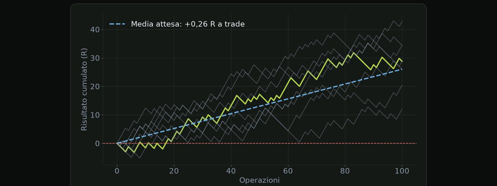
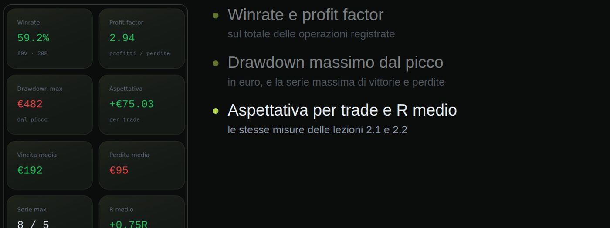

Materiale educativo, non consulenza finanziaria. Il trading con leva su forex, CFD e futures comporta un rischio elevato: puoi perdere tutto il capitale. Numeri, esempi e simulazioni non prevedono risultati futuri.
Quanto guadagna, in media, ogni operazione del tuo sistema.
Un sistema non si giudica da un trade e nemmeno da una giornata. Si giudica da cosa succede in media su molte operazioni. Quella media si chiama expectancy, aspettativa. Ti dice quanto vale, in R, una operazione tipica del tuo sistema.
La formula è semplice. L'expectancy è la probabilità di vincere per il guadagno medio, meno la probabilità di perdere per la perdita media. W è il win rate. Gm è il guadagno medio quando vinci, espresso in R. E Pm la perdita media, in R, che di solito è uno se rispetti sempre lo stop.
| Win rate W | 45% |
| Guadagno medio | 1,8 R |
| Perdita media | 1 R |
| 0,45 × 1,8 | 0,81 |
| 0,55 × 1 | 0,55 |
| Expectancy | 0,81 − 0,55 |
| Expectancy | +0,26 R |
| Con uno stop di 25 pip | +6,5 pip a trade |
| Con 0,4 lotti (10 € a pip per lotto) | +26 € a trade |
| Su 100 trade | +650 pip = +2.600 € |
| Sistema | Win rate | Guadagno medio | Expectancy |
|---|---|---|---|
| A · trend | 35% | 3 R | +0,40 R |
| B · reversal | 60% | 0,8 R | +0,08 R |
| C · ingannevole | 50% | 0,8 R | −0,10 R |
Chi vince più spesso non è per forza il migliore.

Questo grafico mostra otto serie simulate di cento trade dello stesso sistema, quello da più zero virgola ventisei R. La linea tratteggiata è la media attesa. Ma le singole serie si allontanano molto da essa: alcune finiscono in perdita, altre molto più su. Ecco perché una expectancy positiva non esclude periodi lunghi sotto zero.
La gestione del rischio protegge un vantaggio. Non lo crea.
Quanto guadagni per ogni euro che perdi.
Il profit factor risponde a una domanda semplice: quanto guadagni per ogni euro che perdi? Si calcola dividendo la somma dei guadagni lordi per la somma delle perdite lorde. I guadagni sono la somma di tutte le operazioni vinte; le perdite, in valore assoluto, la somma di tutte quelle perse. Se il profit factor è sopra uno, il sistema è in attivo.
| Vinte | 45 × 1,8 R = 81 R |
| Perse | 55 × 1 R = 55 R |
| PF | 81 ÷ 55 |
| PF | Lettura |
|---|---|
| < 1 | sistema perdente |
| 1,0 – 1,3 | margine sottile: i costi lo erodono |
| 1,3 – 2,0 | zona sana per molti sistemi |
| > 2,5 | attenzione: spesso pochi trade o dati troppo ottimizzati |
Indicazioni generali, non soglie ufficiali.
| Cosa dice | media per trade |
| Unità | R |
| Soglia | > 0 |
| Cosa dice | guadagni / perdite |
| Unità | rapporto |
| Soglia | > 1 |
Come stanno insieme i due indicatori? L'expectancy ti dice la media per trade, in R. È positiva sopra zero. Il profit factor ti dice il rapporto tra guadagni e perdite. È in attivo sopra uno. Sono due modi di guardare la stessa cosa: se uno è in attivo, lo è anche l'altro. Usali insieme perché la expectancy ti dà la dimensione del vantaggio, il profit factor ti dà un colpo d'occhio.
Un risultato troppo bello va sempre controllato due volte.
Quanti trade servono per fidarsi dei numeri.
Venti trade vinti su trenta sembrano un grande sistema. Ma anche il caso, ogni tanto, produce serie così. Il caso genera serie bellissime e serie terribili senza che il sistema c'entri. Per distinguere un vantaggio dalla fortuna servono abbastanza dati. Vediamo quanti.
| Trade | Win rate misurato | Incertezza (95%) |
|---|---|---|
| 30 | 45% | ± 18 punti |
| 100 | 45% | ± 10 punti |
| 400 | 45% | ± 5 punti |
Intervalli indicativi, approssimati.
| Trade | Expectancy vera | Misurata tra circa |
|---|---|---|
| 30 | +0,26 R | −0,24 e +0,76 |
| 100 | +0,26 R | −0,01 e +0,53 |
| 400 | +0,26 R | +0,12 e +0,40 |
Stima su un sistema con 45% di vincite e +1,8 / −1 R.
Cosa fare allora? Raccogli almeno cento trade prima di giudicare un sistema, meglio duecento o più. Non cambiare le regole dopo dieci perdite, a meno che tu abbia individuato un errore di esecuzione, non di risultato. E per raccogliere dati usa rischio minimo o un conto demo: i dati costano meno del capitale.
Dieci trade sono una storia. Mille trade sono una statistica.
Spread, commissioni e slippage: quanto pesano davvero.
Tre costi riducono il tuo risultato. Lo spread: la differenza tra prezzo di acquisto e di vendita. Lo paghi appena entri. Le commissioni: una cifra per lotto, tipica dei conti con spread ridotto. Lo slippage: la differenza tra il prezzo che volevi e quello che ottieni, soprattutto durante le notizie e quando scatta uno stop.
Per capire quanto pesano, traduci tutto in pip. Il vantaggio netto per trade, in pip, è l'expectancy per lo stop, meno i costi. L'expectancy, in R, per esempio zero virgola ventisei. Moltiplicata per lo stop dà il guadagno medio lordo in pip. Lo stop è quello che usi, in pip. E i costi sono spread, commissioni e slippage, sempre in pip. Un costo fisso pesa poco se lo stop è lontano, e molto se è vicino.
| Stop | Vantaggio lordo | Costi | Netto |
|---|---|---|---|
| 50 pip | +13 pip | −1,5 pip | +11,5 pip |
| 25 pip | +6,5 pip | −1,5 pip | +5 pip |
| 10 pip | +2,6 pip | −1,5 pip | +1,1 pip |
| 5 pip | +1,3 pip | −1,5 pip | −0,2 pip |
Sistema di esempio: expectancy +0,26 R.
Tre conseguenze pratiche. Gli stop molto corti sono molto sensibili ai costi. Lo scalping richiede costi bassissimi e un vantaggio alto. Misura i costi sul tuo conto reale, non fidarti dei dati pubblicitari del broker. E includi sempre i costi quando testi un sistema: altrimenti l'expectancy che vedi è più alta di quella vera.
Il vantaggio che non sopravvive ai costi non è un vantaggio.
Per migliorare devi misurare quello che fai davvero.
Perché tenere un journal? Perché la memoria seleziona: ricordi i trade belli e dimentichi i piccoli errori. I numeri non hanno umore: mostrano quando e dove perdi. E trasformano le sensazioni in dati. Oggi ho operato male diventa: ho violato la regola tre.
| Campo | Perché serve |
|---|---|
| Data, ora, strumento | trovare gli orari e i mercati peggiori |
| Ingresso, stop, target | calcolare il rischio e il RR previsto |
| Rischio in € e in % | verificare che rispetti il piano |
| Risultato in R | confrontare tutto |
| Errore o regola violata | trovare le perdite evitabili |
| Ingresso | 1,1000 |
| Stop | 1,0975 |
| Target | 1,1045 |
| Atteso | +45 pip |
| Uscita | 1,1018 |
| Motivo | paura |
| Chiuso a | +18 pip |
| Differenza | −27 pip |
La misura più preziosa è il confronto tra il risultato previsto e quello realizzato. Prevedevi di entrare a uno virgola uno zero zero zero, con lo stop venticinque pip sotto e il target quarantacinque sopra: un guadagno atteso di quarantacinque pip. In realtà hai chiuso a mano a diciotto pip, per paura. Hai lasciato per strada ventisette pip. Se succede spesso, il vantaggio reale del tuo sistema è molto più basso di quello sulla carta.
in un solo trade, uscendo prima del target
Prendiamo quel trade. Meno ventisette pip rispetto al piano. Il nostro sistema vale in media circa sei virgola cinque pip a trade, con uno stop di venticinque pip. Se ti capita una volta su cinque, perdi in media cinque virgola quattro pip a trade: più dell'ottanta per cento del vantaggio. Il problema non è il sistema. È l'esecuzione. Ma lo scopri solo se registri i numeri.
Per tenere il journal ti basta un foglio di calcolo, con una colonna per ogni campo e due formule per calcolare R e totale. Oppure puoi usare il Riskly Journal. Dichiaro che è un mio prodotto: raccoglie le operazioni, calcola le statistiche e mostra, per esempio, gli orari in cui perdi di più. Qualunque strumento va bene, purché lo compili ogni giorno e senza eccezioni.

Questa è una schermata del Riskly Journal, che è un mio prodotto, con dati dimostrativi. Mostra le stesse misure che hai imparato. Il win rate e il profit factor calcolati sulle operazioni registrate. Il drawdown massimo dal picco, e la serie massima di vittorie e di perdite. E l'aspettativa per trade, con l'R medio: la expectancy della lezione due punto uno. Con un foglio di calcolo ottieni gli stessi numeri.
Quello che non misuri non puoi migliorarlo.
Prova a risolverli senza guardare: le soluzioni sono nella pagina successiva.
| Win rate | 40% |
| Guadagno medio | 2,5 R |
| Perdita media | 1 R |
| Vinte | 40 trade da 1,5 R |
| Perse | 60 trade da 1 R |
| Test | 20 trade, 14 vinti |
| Domanda | è una prova del vantaggio? |
| Stop | 20 pip |
| Spread + commissione | 2 pip |
| Expectancy lorda | +0,30 R |
| 0,40 × 2,5 | 1,00 |
| 0,60 × 1 | 0,60 |
| Differenza | +0,40 R |
Zero virgola quaranta per due virgola cinque fa uno. Zero virgola sessanta per uno fa zero virgola sessanta. La differenza: più zero virgola quaranta R.
| Guadagni | 40 × 1,5 = 60 R |
| Perdite | 60 × 1 = 60 R |
| PF | 60 ÷ 60 |
Quaranta per uno virgola cinque fa sessanta R. Sessanta per uno fa sessanta R. Sessanta diviso sessanta: uno. Sei in pareggio, e dopo i costi saresti in perdita. Ecco perché guardare il win rate da solo inganna.
| Win rate | 70% |
| Campione | solo 20 trade |
| Incertezza | circa ± 20 punti |
No. Con venti trade l'incertezza è di circa venti punti in entrambe le direzioni. Il risultato è compatibile con un win rate vero intorno al cinquanta per cento, e anche meno se hai avuto fortuna. Per concludere serve molto più campione.
| Vantaggio lordo | 0,30 × 20 = 6 pip |
| Costi | − 2 pip |
| Netto | 4 pip (= +0,20 R) |
Zero virgola trenta per venti: sei pip lordi. Meno due di costi: quattro pip netti, che corrispondono a zero virgola venti R. Un terzo del vantaggio è andato in costi.
Spunta ogni punto solo se sapresti spiegarlo a voce a un altro trader.
Materiale educativo, non consulenza finanziaria. Il trading con leva su forex, CFD e futures comporta un rischio elevato: puoi perdere tutto il capitale. Numeri, esempi e simulazioni non prevedono risultati futuri. · riskly.trade